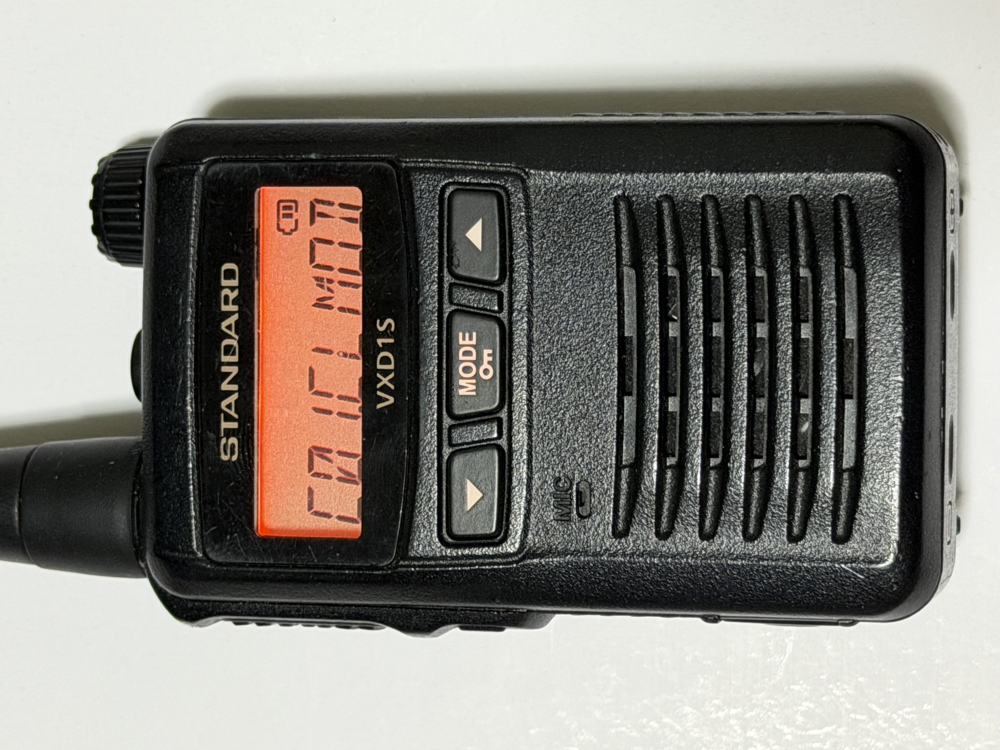
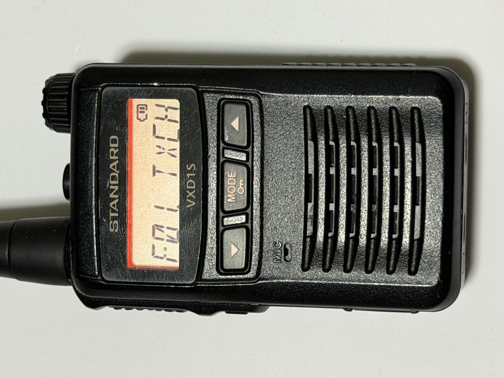
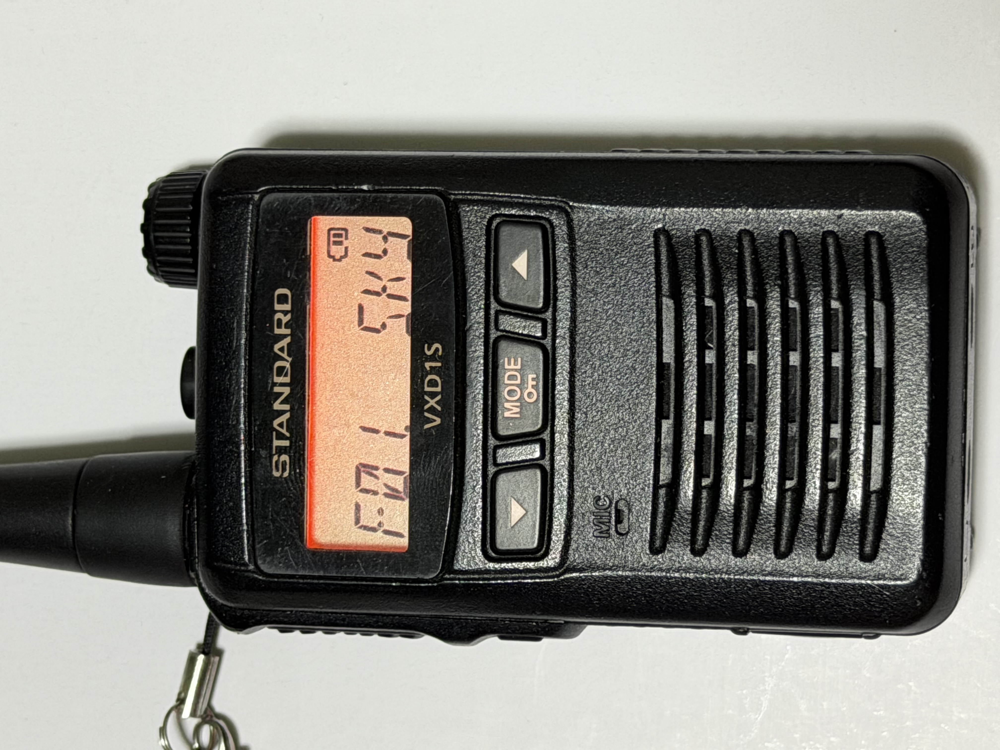
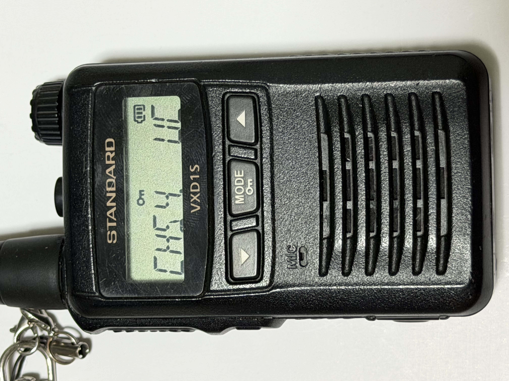
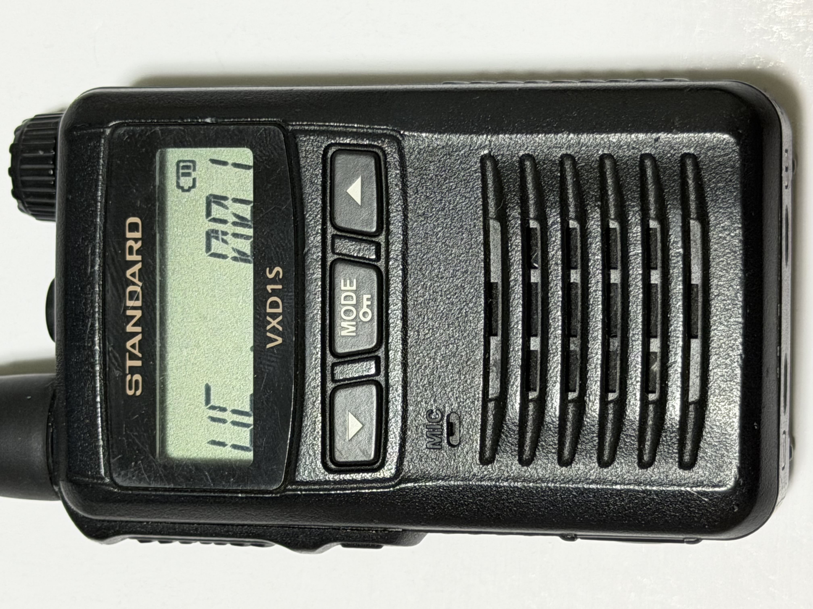
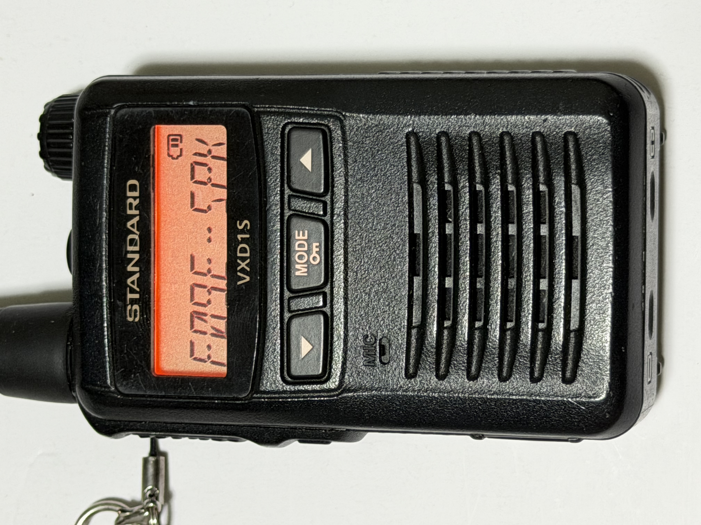
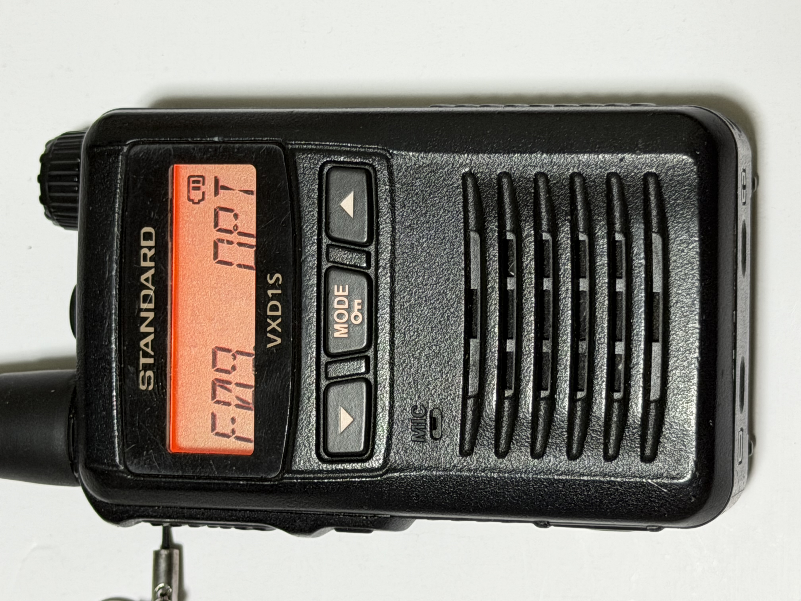

京都ハングの設定：S4 / UC001
他のエリアでは現地指定のチャンネルとユーザーコードを使用してください。
他のエリアでは現地指定のチャンネルとユーザーコードを使用してください。
STEP 1｜スカイチャンネルに設定する
- 無線機の電源を切る。
- MODEボタンを押しながら電源を入れる。「ピロリロリン」という短い起動音が鳴り、
SET MODEと表示された後、C01.CLMODが表示される。 - MODEボタンを何度か押して
F01.TXCHを表示する。 - ▲▼ボタンで
SKYを選択する。 - ［MODE］キーを1回押して確定する。
- 電源を切り、通常どおり入れ直す。



TX = Transmit（送信）、CH = Channel（チャンネル）。TXCHは送信チャンネル設定。
STEP 2｜チャンネルとユーザーコードを合わせる
- 通常どおり電源を入れる。
- MODEボタンを長押ししてキーロックを解除する。鍵マークが消えたことを確認する。
- ▲▼ボタンでチャンネルを合わせる。京都ハングでは
S4。 - MODEボタンを押す。
UCと3桁の数字が表示される。 - ▲▼ボタンを1回押すと、一番左の桁が編集可能になる。
- ▲▼ボタンで数字を変更する。
- 側面のオレンジ色のボタンで編集する桁を移動する。
- 数字変更と桁移動を繰り返し、京都ハングでは
UC001に合わせる。 - ［MODE］キーを1回押して確定する。
- 通常画面に戻ったら、MODEボタンを長押ししてキーロックをかける。鍵マークが表示されたことを確認する。
注意：UC表示画面は、何もボタンを操作しないと自動的に通常画面へ戻ります。変更する場合は▲▼ボタンを押して編集を開始してください。


UC = User Code（ユーザーコード）。他エリアでは現地指定の値に合わせてください。
STEP 3｜外部スピーカーを設定する
- 無線機の電源を切る。
- MODEボタンを押しながら電源を入れる。「ピロリロリン」という短い起動音が鳴り、
SET MODEの後、C01.CLMODが表示される。 - ［MODE］キーを何度か押して、
E-SPKと表示される設定項目を選ぶ。項目番号（F09など）は機種や設定によって異なる場合があるため、E-SPKの表示を目印にする。 - ▲▼ボタンで
OPTを選択する。 - ［MODE］キーを1回押して確定する。
- 電源を切り、通常どおり電源を入れ直す。


E = External（外部）、SPK = Speaker（スピーカー）。STD = Standard（標準）、OPT = Option（オプション）。
使用前には現地の指導者の指示に従い、チャンネル・UC・受信状態を確認してください。